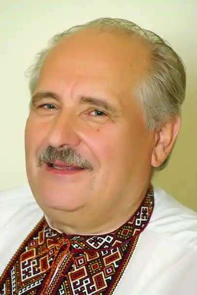

Степан Григорович Пушик (26 січня 1944, с. Вікторів Галицького району Івано-Франківської області) — український письменник, літературознавець, фольклорист,журналіст, громадсько-культурний і політичний діяч, кандидат філологічних наук, професор Прикарпатського університету ім. В. Стефаника.
Лауреат державної премії ім. Т. Шевченка, премій ім. В. Стефаника, П. Чубинського, Мирослава Ірчана, О. Копиленка, Міжнародної літературної премії імені Воляників-Швабінських Українського Вільного Університету в Нью-Йорку. Член Спілки письменників України та Українського ПЕН-клубу.
Заслужений Діяч мистецтв України. Закінчив Тлумацький сільськогосподарський технікум (1964) і Літературний інститут імені Горького у Москві (1973), навчався в на загально-науковому факультеті Чернівецького університету (1964), докторантурі в Інституті мистецтвознавства, фольклору та етнології ім. М. Рильського НАНУ (1995–1996) У 60-х роках працював старшим економістом у Яворові, Довгополі Косівського та Верховинського р-нів, служив у Радянській Армії (на ракетній базі; 1964–167), а згодом кореспондентом газети "Прикарпатська правда", головою ради Клубу творчої інтелігенції, керівником літературної студії. Голова оргкомітету і перший голова Івано-Франківського крайового Товариства української мови ім. Т. Г. Шевченка. Був обраний народним депутатом до Верховної Ради України першого демократичного скликання і був головою підкомісії з питань національних меншин Комісії культури і духовного відродження. Входив до опозиційної Народної Ради (1990–1994). Одночасно — доцент Київського національного університету ім. Т. Шевченка. Тепер — професор кафедри української літератури Прикарпатського університету ім. В.Стефаника. Досліджує міфологію слов’ян, фольклор та історію краю, пише про відомих українських культурних діячів. Автор багатьох поетичних та прозових збірок, фольклорних записів, книжок для дітей, літературознавчих та краєзнавчих праць, розвідки про карпатське коріння Т. Шевченка "Славетний предок Кобзаря", дослідження про "Слово о полку Ігоревім", про слов’янську та праукраїнську міфологію ("Бусова книга"), повість про Володимира Івасюка ("Блискавиці б’ють у найвищі дерева"). Оригінальні вибрані твори вийшли в 6 томах (7 книгах), у 7 окремих збірках видано записи народних казок, пісень, українських тостів, приповідок. Йому належить переклад кількох віршів караїмського поета Захарії Абрагамовича. Понад 150 віршів С. Пушика покладено на музику композиторами О. Білашем, А. Кос-Анатольським, В. Івасюком,Б. Юрківим, Б. Шиптуром, О. Гавришем, М. Гаденком, Тарасом Пушиком та ін. Вони ввійшли до репертуару виконавців Д. Гнатюк, С. Ротару, А. Мокренка, М. Кондратюка, подружжя Білоножки, М. Кривеня, В. Піруса, М. Сливоцького, ансамблів "Кобза", "Мрія", "Росинка", Гуцульського ансамблю, хору "Трембіта", капели бандуристів, Черкаського народного хору та інших вітчизняних та зарубіжних колективів. Зі шкільних років записує фольклор і на сьогодні має унікальну (понад 200 томів) збірку різних записів, мала частина яких видана книжками: народні казки "Чарівне горнятко" (у співавторстві, 1971), "Казки Підгір’я" (1976), "Золота вежа" (1983, літ. запис), "Срібні воли" (1995). Впорядкував і видав книжку ліричних пісень "Сміються, плачуть солов’ї" (1989), до якої включив власні записи фольклору. Вийшли "Пісні Карпат" (у співавторстві, 1972), "Українські тости" (1997, 2002), "Приповідки" (2009). Поетичне світосприймання, добре знання народної поезії, фольклористичні експедиції, журналістська праця, мандрівки (С. Пушик побував у багатьох країнах світу, був учасником альпіністської експедиції в Гімалаях, майже в усіх республіках колишнього СРСР, населених пунктах Карпат, Закарпаття й Прикарпаття) синтезувалися в оригінальну прозу. Повість "Перо Золотого птаха" (1978, 1979, 1982, 1989, 2004) була новим явищем в українській прозі (відзначена 3-ю премією на конкурсі на кращу повість, роман про сучасника), жанрово (як роман з народних уст) твір "Страж-гора" підтвердив народження оригінального прозаїка, роман витримав багато видань (1981, 1982, 1985, 1989, 2004, 2005 рр.). Добре зустріла критика збірку оповідань та повістей "Ключ-зілля" (1981), повісті та есеї "Дараби пливуть у легенду" (1991), новели та оповідання "Ватра на Чорній горі" (2001, відзначена першою премією Українського Вільного університету в Нью-Йорку фундації Воляників-Швабінських), повісті й оповідання "Славетний предок Кобзаря" (2001), роман "Галицька брама" (1989, 2006), книжки публіцистики "Івано-Франківщина" (1984), "Українці в Тюмені" (2000, у співавторстві); низки фотоальбомів (спільно з В. Пилип’юком та О. Мінделем): "Землі нев’януча краса. Івано-Франківщина" (1985), "З верховини тисячоліть. Івано-Франківщина" (1999), "Місто на Бистрицях. Івано-Франківськ" (1999), "Де шум потоків і смерек" (2003). Перевидав "Народний калєндар" А. Онищука, опублікував історичний есей "Бусова книга" (2001–2004, 2007–2008). Автор перекладу та багатьох досліджень про "Слово о полку Ігоревім" (зокрема — "Криваве весілля на Каялі", 1989; "Нове про "Слово о плъку Ігоревім", 2012), "Моління Данила Заточника", праць з літературознавства, фольклористики, етнографії, історіографії, краєзнавства, культурології, статей для енциклопедій та ін. Зокрема, висловив гіпотезу, що автором "Слова…" і "Моління…" є князь Володимир, син Ярослава Осмомисла і брат Ярославни, дружини Ігоря Святославича. На сцені Івано-Франківського облмуздрамтеатру ім. І. Франка йшли вистави, п’єси "Земле моя" (у співавторстві), "Заплакані вікна" (1996), "Золотий Тік" (1999), "Я іду по своїй землі" (2005). Вибрані твори С. Пушика у 6-ти томах, 7-ми книгах видаються впродовж 2004–2012 рр. Степан Пушик — автор одного з найбільших щоденників у світі. Цей щоденник налічує близько 300 томів, у кожному з яких є до 200 сторінок.